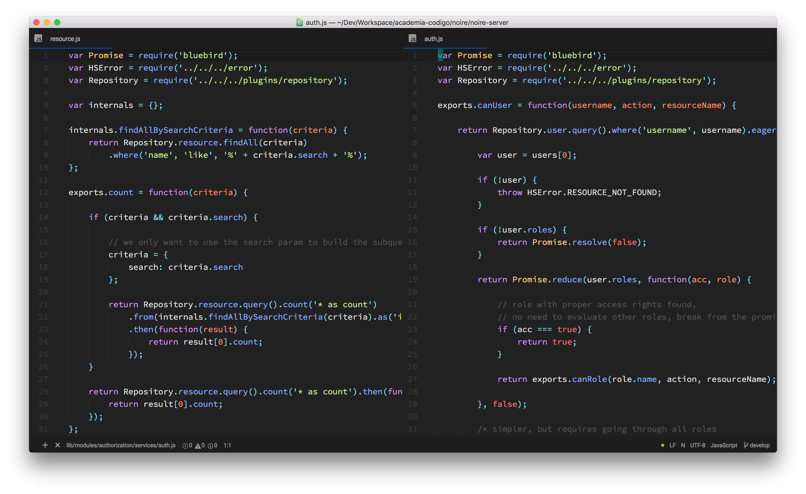
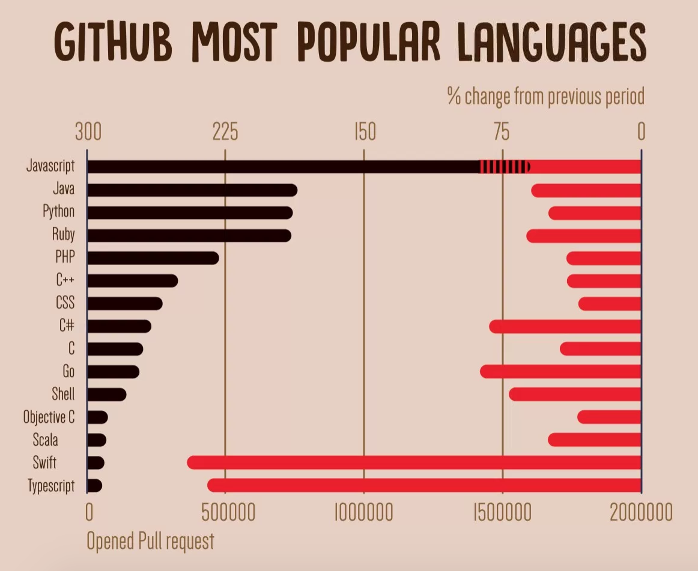
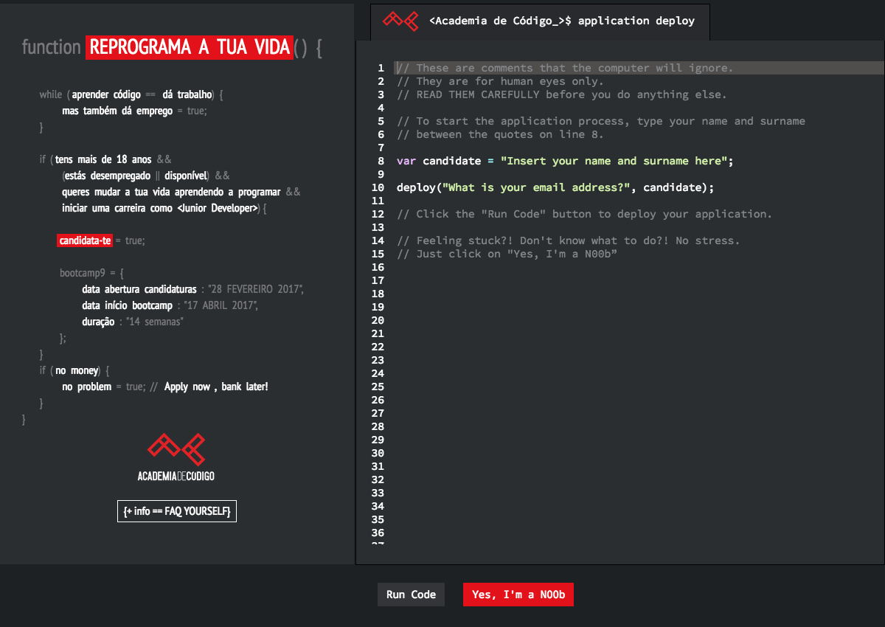
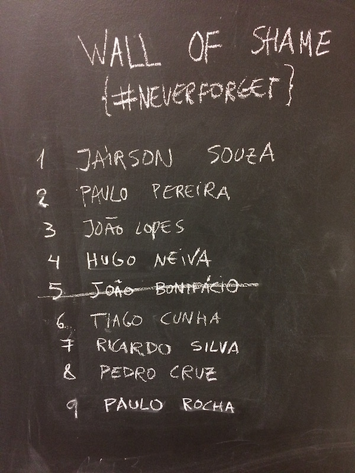
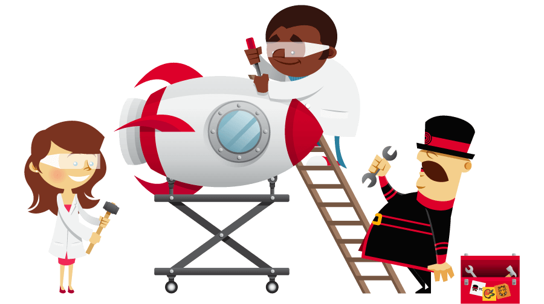

Happy Programmer's Day

Change
<Academia de Código_>
REPROGRAMMING ONE LIFE AT A TIME
<Academia de Código_Bootcamps>
How?
<Academia de Código_Bootcamps>
| Goal: |
Change jobless brilliant minds into junior software developers |
| Duration: |
14 Weeks |
| Format: |
Intensive & Immersive |
| Languages: |
Java & JavaScript |
| Frameworks: |
Spring, Hibernate, Angular |
| Avoid: |
DO NOT provide recipe, teach how to program instead! |
Programming Languages

Numbers
- 2 Campuses
- 9 Bootcamps
- > 4000 Applications
- 160 Junior Software Developers
- 94% Success Rate
Admissions Process
The Deploy Page

Introduction to
Computer Science
Online Form
Code Challenge
Workshop
Motivation
Success Stories
Insuccess Stories

Embrace Change
Take a break from the old stuff you do everyday...
... and before the old gets obsolete
Learn Something New

do not over do it
Tech Fatigue

Always code as if the person who ends up maintaining your code is a violent psychopath who knows where you live
rui.ferrao@academiadecodigo.org
jorge.gouveia@academiadecodigo.org